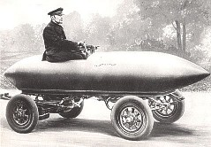

PRESENTATION DE LA VOITURE ELECTRIQUE.
L’Histoire de la voiture électrique.
Le premier véhicule électrique a fait son apparition aux alentours de 1830 (1832-1839). La première personne à avoir inventé une voiture électrique est Robert Anderson, un homme d’affaires écossais. Il s’agissait plutôt d’une carriole électrique.

1859, le français Gaston Planté inventa la batterie rechargeable au plomb acide, batterie qui fut par la suite améliorée par Camille Faure en 1881. Cette innovation posa les bases des prochains prototypes et marqua le début de l’essor du véhicule électrique.
La première voiture à avoir dépassé les 100 km/h en 1899 fut une voiture électrique "la jamais contente" développée par un ingénieur Belge.

Created with the Personal Edition of HelpNDoc: Easy to use tool to create HTML Help files and Help web sites